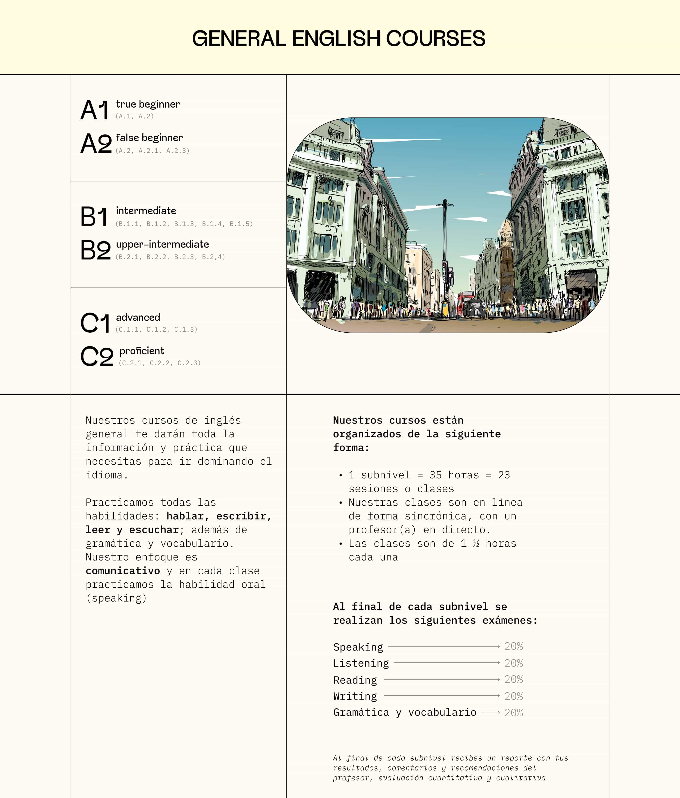
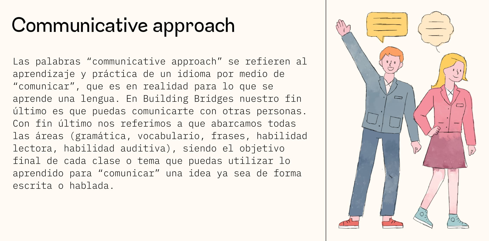
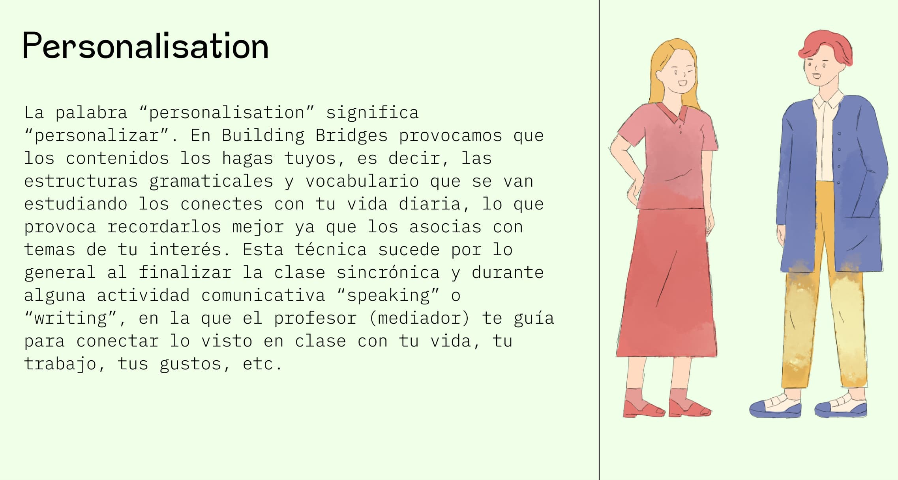
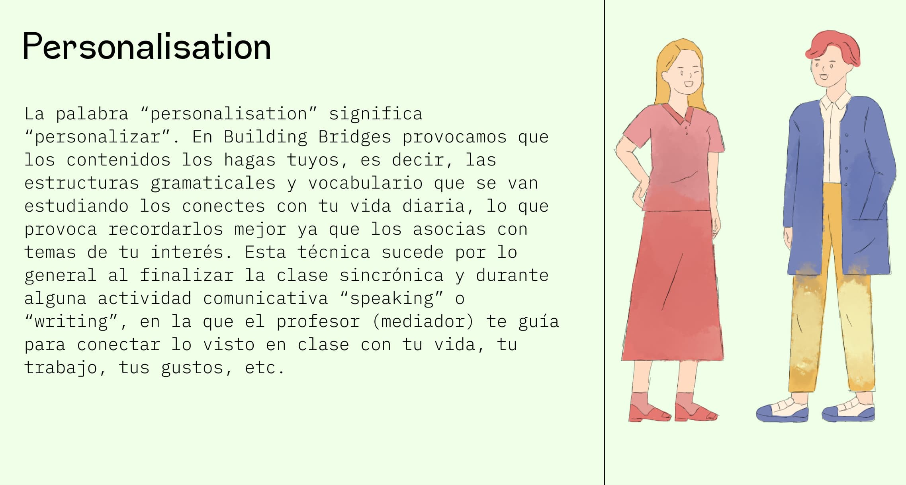

Building Bridges is an online English language school in Mexico. The Snipp team created a unique and modern landing page that captures the visitor's attention from the first screen and sets the company apart from all competitors in the market.
The course descriptions are aesthetically pleasing and present the information in an easy-to-understand manner. Artistically accurate illustrations add to the uniqueness and visual appeal.
The grid design is reminiscent of an elementary school notebook, complete with friendly characterizations like a kind teacher leading his student by the hand
 

ALL RIGHT RESERVED 2021
legal